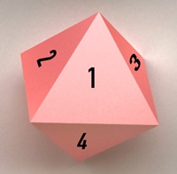
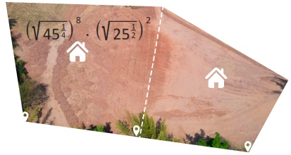
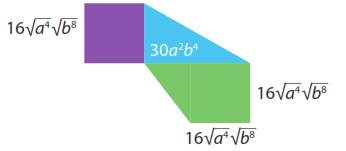
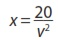
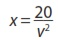

1.
Escribe V si es verdadero y F si es falso.
2.
Reduce y expresa las potencias en signo radical.
3.
Encuentra la solución de estas operaciones con radicales.
4.
Halla la respuesta correcta y une con líneas según corresponda.
5.
Calcula el valor de x en las siguientes potencias.
a.-
x =
6.
Simplifica las siguientes expresiones.

7.
En un experimento, se tiene un cultivo de bacterias que se duplica cada 3 horas. Considerando un
número inicial de bacterias x, ¿cuántas veces se incrementará el número de bacterias en un período
de 24 horas? Aplica potencias.
 Se incrementarán
veces, es decir
bacterias.
Se incrementarán
veces, es decir
bacterias.
Se incrementarán
veces, es decir
bacterias.
8.
Elementos radiactivos se descomponen con el tiempo. El isótopo de yodo y-131 se descompone a la
mitad de su valor anterior cada 8 días. ¿Qué fracción de su valor inicial tendrá en 40 días?
Aplica potencias.
En 40 días el valor del isótopo es de
.
9.
Un trompo tiene 8 lados como polígono regular. Cada uno de los 8 sectores del trompo está enumerado
del 1 al 8. Al girar el trompo seis veces, se registra el número de la cara que toca el suelo.
Calcula, ¿cuántas combinaciones diferentes de números se pueden obtener al realizar estos
seis giros?

Se pueden obtener
combinaciones.
.
10.
Un terreno tiene un área de 446 m2 y se divide en dos partes. Una parte tiene como medida
la expresión que muestra la imagen en metros cuadrados. Calcula. ¿Cuál es el área de la otra
parte?

El área de la otra parte del terreno es de m2
.
11.
Observa el gráfico y halla la expresión que representa el área total. Ten en cuenta
que está conformada por un cuadrado, un trapecio rectangular y un triángulo rectángulo.


Formen grupos y resuelvan las actividades propuestas.
La distancia de frenado de un automóvil es directamente proporcional al cuadrado de su velocidad v
cuando comienza a frenar. Si tomamos como referencia una velocidad v, la distancia de x es de 20
metros.
Tengan en cuenta:  es la distancia de referencia
Calcula las distancias de frenado para las siguientes velocidades:
Tengan en cuenta:  es la distancia de referencia
Calcula las distancias de frenado para las siguientes velocidades:
a.- El doble de la velocidad v partiendo de la referencia.
b.- El triple de la velocidad v partiendo de la referencia.
c.- La mitad de la velocidad v partiendo de la referencia.